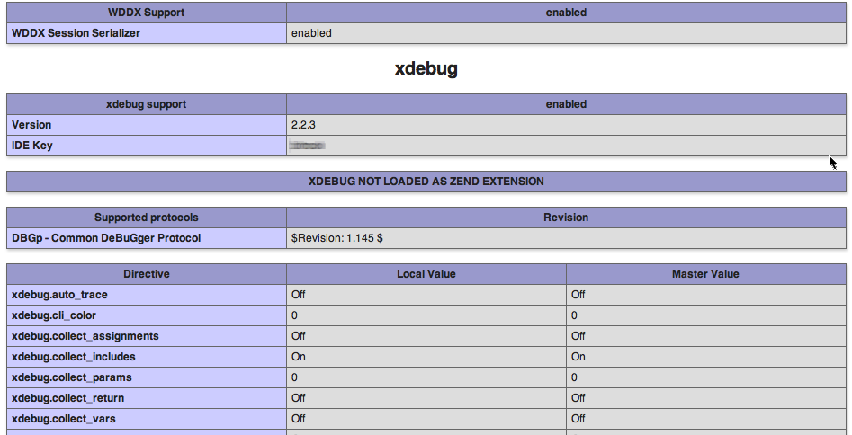
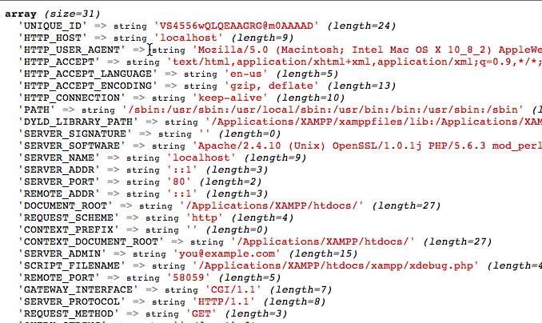

Activate and Use Xdebug
Xdebug is a powerful open source debugger and profiler for PHP. It is included with VXOST and can be used to display stack traces, analyze code coverage and profile your PHP code.
To activate Xdebug, follow these steps:
-
Edit the php.ini file in the etc/ subdirectory of your VXOST installation directory (usually, /Applications/VXOST). Within this file, activate the Xdebug extension by adding the following line to it:
extension = xdebug.so
-
Restart the Apache server using the VXOST control panel.
Xdebug should now be active. To verify this, browse to the URL http://localhost/vxost/phpinfo.php, which displays the output of the phpinfo() command. Look through the script and verify that the Xdebug extension is now active.

Xdebug overloads the default var_dump() function with its own version that includes (among other things) color coding for different PHP types, so you can see it in action immediately by using the var_dump() function in a PHP script. For example, create a simple PHP script in the htdocs/ subdirectory of your VXOST installation directory with the following content:
<?php var_dump($_SERVER);
When you view your script through a browser, here’s an example of what you might see:

One of Xdebug’s most powerful features is its ability to profile a PHP script and produce detailed statistics on how long each function call or line of code takes to execute. This can be very useful for performance analysis of complex scripts. To turn on script profiling, follow these steps:
-
Edit the php.ini file in the etc/ subdirectory of your VXOST installation directory. Within this file, add the following section:
[XDebug] xdebug.profiler_append = 0 xdebug.profiler_enable = 1 xdebug.profiler_enable_trigger = 0 xdebug.profiler_output_dir = "/tmp" xdebug.profiler_output_name = "cachegrind.out.%t-%s"
-
Restart the Apache server using the VXOST control panel.
At this point, XDebug profiling is active. Every PHP script that you run will be profiled and the results will be placed in the /tmp/ directory as a so-called cachegrind file. You can view this cachegrind file with a tool like WebGrind or qcachegrind, which you must download and install separately.
| To find out more about Xdebug’s powerful features, read the Xdebug documentation. |